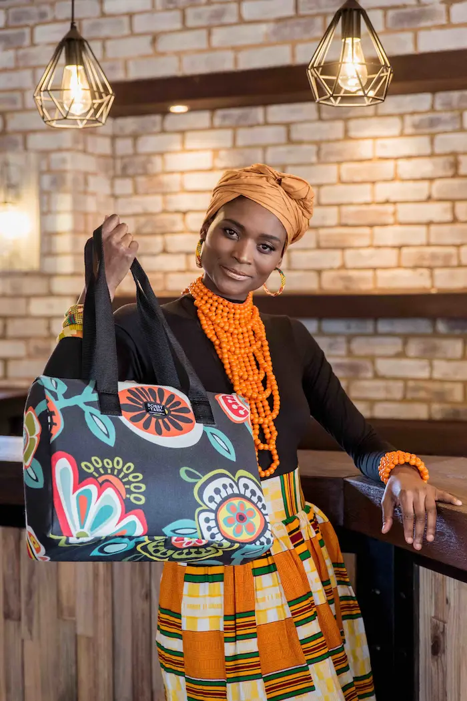

#KnowUs
Fashion meets function - discover the bliss behind every bag.
Who We Are?
At Bag Bliss, we see every bag as a canvas for self-expression - not just a practical accessory, but a statement piece that reflects your personality. Our carefully curated collection features everything from trendsetting backpacks to timeless totes, each designed with inclusive versatility for women, the LGBTQ+ community, and all who value bold individuality. We're revolutionizing affordable fashion by merging runway-inspired designs with everyday durability, because looking exceptional shouldn't come at an exceptional price.
History
The story of Bag Bliss is one stitched with legacy, love, and a deep appreciation for the art of carrying what matters most. South Africa's relationship with handbags goes far beyond fashion—it's a story rooted in both tradition and transformation. As early as 1947, handbags in South Africa reflected a blend of utility and emerging style. Many of the earliest bags were crafted from animal skins, chosen not only for their durability but also for the symbolic properties they were believed to carry. These bags weren't just accessories—they were extensions of culture, personality, and purpose. Over time, as fashion evolved and lifestyles changed, so did the handbag. Messenger bags and other structured styles began to gain popularity, combining function with form. Today, South Africa's handbag scene is thriving, with contemporary designers like Hanneli Rupert creating luxury pieces that honor traditional materials and techniques. It's a beautiful reflection of where we've come from and where we're going: a fusion of heritage, craftsmanship, and innovation.
Bag Bliss was born from that same spirit. Growing up, I watched my grandmother and mother head to church each Sunday with the most elegant bags I had ever seen. They weren't just stylish—they were practical, too. Those bags held tissues, snacks, notebooks, and all the things kids like me were constantly asking for. I saw how a good bag could be both beautiful and deeply useful. But I also noticed that truly high-quality bags were often out of reach. They were treasured, used sparingly, and hard to replace. That stayed with me. When I created Bag Bliss, I wanted to build something different. A brand where fashion meets function. Where quality doesn't come at the cost of affordability. A space that's inclusive—celebrating women, the gays, the theys, and everyone who knows that the right bag can pull your whole life together. Every Bag Bliss piece is designed to be stylish enough to turn heads, strong enough to carry your daily chaos, and affordable enough to be within reach. Because we believe everyone deserves a little bliss on their shoulder. This isn't just about bags—it's about legacy, access, and everyday confidence. And we're so glad you're part of the journey.
Be apart of our story!
Shop bags that are inspired by South African History